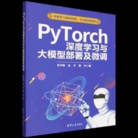

AI 大模型学习经历
致力于为全人类带来欢笑的 AI 主播——Neuro-sama。Neuro-sama 属于多种不同的专家模型 AI 集成的产物，她集成了大语言模型、语音识别、视觉识别等多种专家模型 AI。
我从很久之前就很向往 AI，令我感触最大的就是茅场晶彦的 SAO，还有就是 vedal 的 neuro。一个是假想世界的终极幻想，另一个是现实世界的真实写照。所以我在 2025 年的下半年开始，决定往这方面追赶，逐步学习人工智能深度学习，并在此分享学习过程。
PS：学的时候感觉我是天才（bush），最后一切以蜂王为尊！

什么是神经网络
这是我第一本看的书——《PyTorch 深度学习与大模型部署与微调》，对于初学者来说十分友好。它首先讲解了什么是神经网络：神经网络是一种仿生物神经网络的计算模型，可以用来近似计算函数，也可以用来处理数据、图片和视频等信息。神经网络一般由若干神经元组成，而神经元是神经网络中的计算和存储单元。神经元一般由输入层、权重、输出层、神经元内部的处理函数和激活函数构成。深度神经网络会在输入层和输出层之间搭建隐藏层。
超参数
神经网络的超参数是指与网络结构、训练过程和优化算法相关的参数。常见的参数有层数、批量大小、迭代次数、学习率、优化器、正则化项。学习率决定了模型在优化过程中更新权重的步长。层数过多，会增加出现过拟合的风险。迭代次数多了，也可能出现过拟合现象，但较小的迭代次数可能会导致数据未被充分利用。学习率过大会导致训练过程不收敛，过低则会让训练过程过于缓慢。正则化项用于减少模型的过拟合程度——在损失函数里添加正则化项，可以避免出现较大的权重值，从而优化训练的过程。
过拟合是指在训练神经网络模型时，过多关注了训练集的数据特征，导致该模型能很好地预测训练集数据，但不能很好地预测测试集数据。防止过拟合的措施有：用更多的数据训练，以及在训练时引入正则化约束项。欠拟合是指模型不能很好地找到训练集数据的规律，从而无法有效预测测试集里的数据，防止欠拟合的措施有：增加模型的复杂度，或者减小训练所用的正则化系数。
训练的核心循环
深度学习训练的核心循环是：
前向传播 → 计算损失 → 梯度清零 → 反向传播 → 参数更新从中我理解的是：计算损失是用损失函数检测损失值（和真实值的误差），然后梯度值是数据的求导方向（向着最正确的位置方向）。而梯度在一个循环里要先清空以前的梯度，再通过反向传播得出新的梯度，然后根据这个梯度调整参数（参数更新）。反向传播就是后面的神经节点反方向往前推算，直到第二层神经节点。
优化器与激活函数
最后调参所用的则是优化器，优化器是在学习训练过程中用来更新参数的优化目标函数。优化器中分为基于梯度下降的 SGD 优化器、含动量因素的 SGD 优化器（动量优化器）、Adagrad 优化器、RMSprop 优化器、Adam 优化器。
为了使数据有曲线变化，所以需要激活函数。如果没有激活函数，就只是线性变化。激活函数分为 sigmoid、tanh、ReLU，它们之间的作用各不相同。常用的损失函数是均方误差损失函数（MSELoss）、交叉熵损失函数（CrossEntropyLoss）。
卷积神经网络
卷积神经网络由一个或多个卷积层、池化层和全连接层构成。卷积运算是由数据的子矩阵和卷积核进行对位加权求和运算。针对原始数据第一次做卷积操作时，卷积核的入口通道等于原始数据的通道数量，出口通道取决于卷积核的数量。如果设置了多个卷积核并进行多次卷积，下一次卷积核的入口通道等于上次卷积操作结果的出口通道数量。
| 参数名 | 说明 |
|---|---|
in_channels | 卷积核的入口通道数 |
out_channels | 卷积核的出口通道数 |
kernel_size | 卷积核的大小 |
stride | 卷积运算的移动步幅，默认为 1 |
padding | 输入特征图周围添加的像素层数，默认为 0 |
卷积运算后，输出特征数据的尺寸为：
output size = (input size - kernel size + 2 * padding) / stride + 1